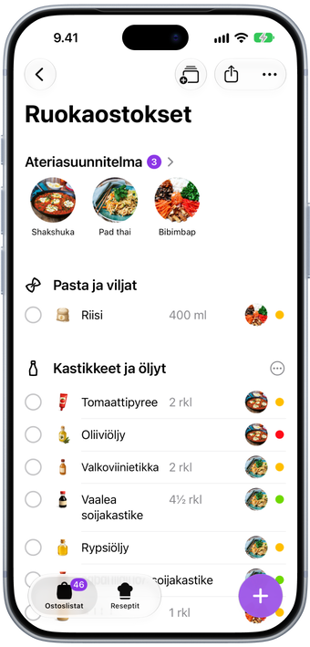
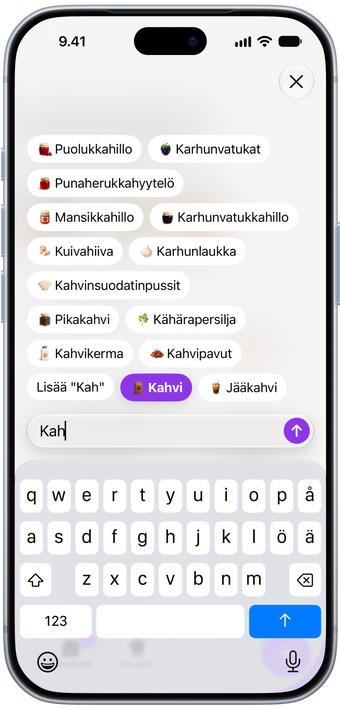
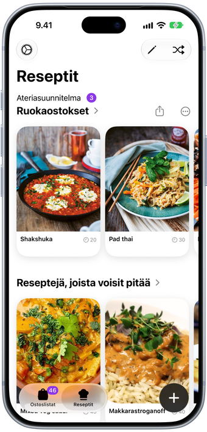
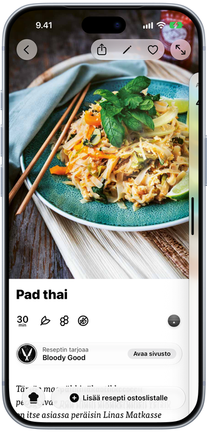
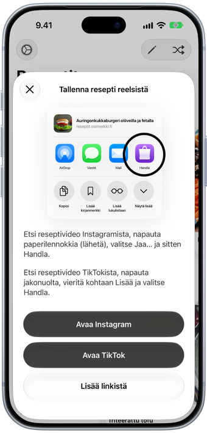
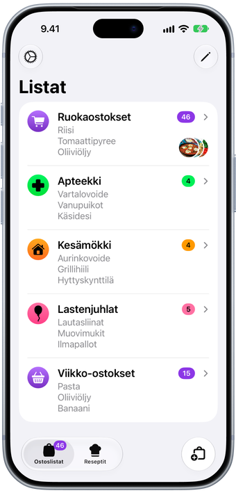
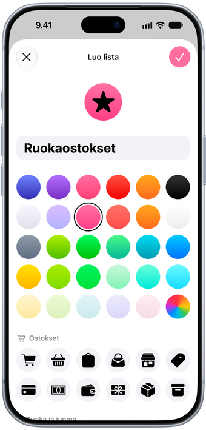
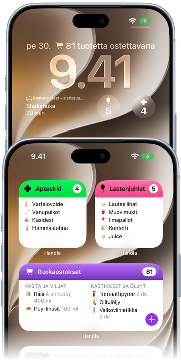
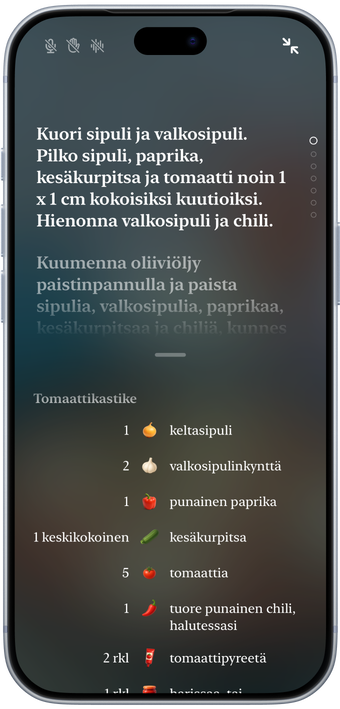

Kuvitettu Resepti- ja Luokiteltu Ympäristötietoinen Henkilökohtainen ostoslista
Lisää resepti, niin sen ainekset tulevat listallesi osastoittain järjestettyinä.
Lisää resepti, niin sen ainekset tulevat listallesi osastoittain järjestettyinä.
Tuotteet järjestyvät itsestään kaupan osastoihin, jokainen omalla kuvituksellaan, ja ateriasuunnitelmasi on heti ylimpänä.

Kirjoita muutama kirjain, niin Handla ehdottaa, mitä tarkoitat, ja oppii, mitä ostat useimmin.

Liitä linkki reseptisivulle, Instagram-reelsiin tai TikTok-videoon, niin Handla tallentaa reseptin aineksineen.

Lisää resepti, niin sen ainekset menevät suoraan listallesi skaalattuina sen mukaan, monelleko kokkaat.

Löysitkö reseptin Instagramista tai TikTokista? Jaa se Handlaan suoraan sovelluksesta, niin se tallentuu resepteihisi.

Ruokaostokset, apteekki, kesämökki. Anna jokaiselle listalle oma nimi, väri ja kuvake.

Valitse listoillesi väri ja kuvake kymmenistä vaihtoehdoista ja sopiva sovelluskuvake.

Pidä lista tai ateriasuunnitelmasi Koti-valikossa ja seuraava ateria lukitulla näytöllä.

Kokkaustila koko näytöllä ja ajastimet jokaisessa vaiheessa. Handla lukee vaiheet ääneen ja vaihtaa sivua, kun nostat kätesi.

Avaa se suurta näyttöä varten. Taita se, kun resepti on auki, niin kokkaustila ottaa ohjat.

Handla on ostoslistasovellus iPhonelle, iPadille ja iPhone Duolle. Kirjoita muutama kirjain, valitse ehdotus, ja tuote päätyy oikealle kaupan osastolle omalla kuvituksellaan. Rastita tuotteita sitä mukaa kuin ostat, niin lista lyhenee kauppaa kiertäessäsi.
Kun tiedät, mitä aiot kokata, lisää resepti. Sen ainekset menevät listallesi, ja resepti odottaa siellä ateriasuunnitelmanasi, ajastimet valmiina vaiheissa, kun alat kokata.
Handlan lataaminen on ilmaista, ja voit käyttää sitä ilmaiseksi listalla, jossa on enintään kymmenen tuotetta. Handla Premium on sovelluksen sisäinen tilaus, jossa on 7 päivän ilmainen kokeilu. Se poistaa rajoituksen ja antaa sinulle niin monta listaa kuin haluat sekä rajattomasti tallennettuja reseptejä. Hinta näkyy aina sovelluksessa ennen kuin sitoudut, ja voit perua milloin tahansa.
Jokainen lisäämäsi tuote menee omalle osastolleen, kuten Hedelmät ja vihannekset, Maitotuotteet tai Leivät, joten kierrät kaupan kerran etkä joudu kulkemaan edestakaisin. Voit vetää osastot oman kauppasi järjestykseen.
Kyllä. Lähetä lista tekstinä kenelle tahansa Viesteissä, Mailissa tai missä tahansa muussa sovelluksessa, tai tulosta se. Reseptit ja kokonaiset ateriasuunnitelmat voi jakaa linkkinä ja tulostaa kuvien kanssa tai ilman, jos haluat säästää mustetta. Jakaminen lähettää kopion, joten lista ei pysy synkronoituna ihmisten välillä.
Kyllä. Lisää resepti listalle, niin sen ainekset menevät suoraan listalle osastoittain järjestettyinä ja skaalattuina sen mukaan, monelleko kokkaat. Resepti jää listalle ateriasuunnitelmaksesi ja on valmiina, kun on aika kokata.
Kyllä. Liitä linkki reseptisivulle, Instagram-reelsiin tai TikTok-videoon, tai jaa se Handlaan Safarista tai sovelluksesta, niin Handla tallentaa reseptin aineksineen ja vaiheineen.
Kyllä. Koko näytön kokkaustila voi lukea jokaisen vaiheen ääneen, kuuntelee komentoja, kuten ”seuraava vaihe”, ja vaihtaa sivua, kun nostat kätesi. Ajastimet on rakennettu vaiheisiin, joten ajastimen käynnistäminen vaatii vain yhden napautuksen.
Kyllä. Lisää lista tai ateriasuunnitelmasi Koti-valikkoon, ja pidä seuraava ateria tai listan tuotemäärä näkyvillä lukitulla näytöllä.
Kyllä. Handla on tehty iPhonelle, iPadille ja iPhone Duolle. Avaa Duo, niin listasi täyttävät suuren näytön, ja käytössäsi on valinnainen sivupalkki sekä lisätilaan suunniteltu korttinäkymä.
Englantia, ruotsia, tanskaa, saksaa, espanjaa, suomea, ranskaa, islantia, japania, norjaa ja hollantia, tuotteiden nimiä myöten.
Ei. Handla on sovellus iPhonelle ja iPadille.
Kirjoita meille osoitteeseen hello@filibaba.com tai katso Tuki-sivu. Luemme kaiken.